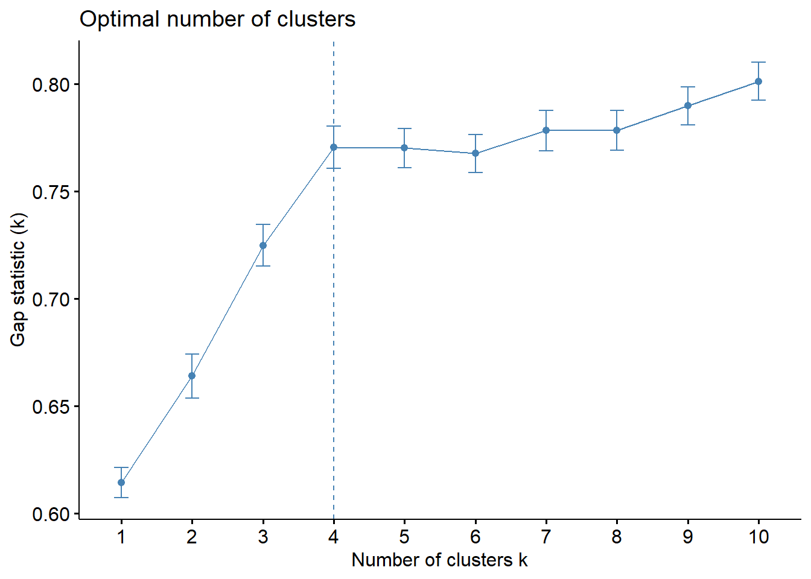
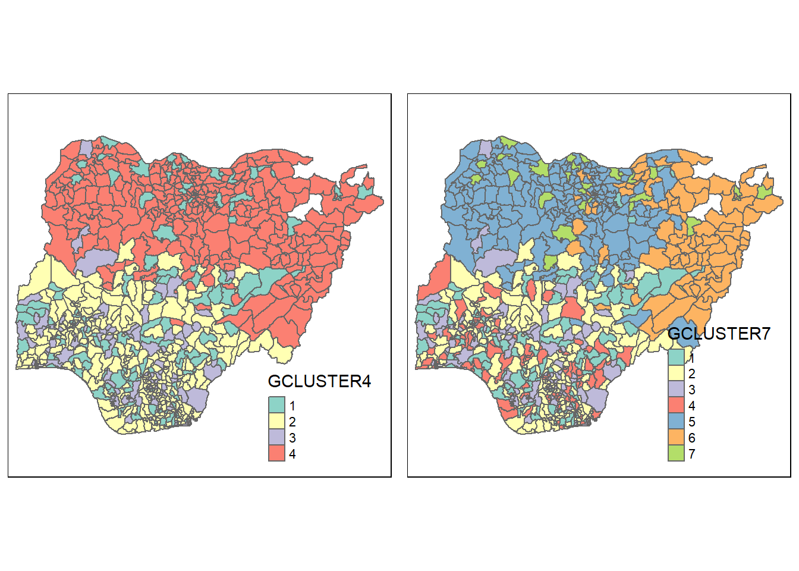

pacman::p_load(rgdal, spdep, tmap, sf, kableExtra,
ggpubr, cluster, ClustGeo, factoextra, NbClust,
heatmaply, corrplot, tidyverse,
dendextend, GGally, funModeling, RColorBrewer)Take-home Exercise 2
Regionalisation Using Water Point Availability in Nigeria
In the last take-home exercise (link), I analysed the spatial distribution of proportion of non-functional waterpoints in Nigeria. I found that there is uneven distribution in the proportion of functional and non-functional waterpoints in each administrative area, which has implications of availability of water supply and maintenance.
In this exercise, I will segment Nigeria into different regions based on the availability of waterpoints, type of waterpoints and usage capacity to identify regions to give recommendations to improve water supply or maintenance.
The following variables will be used (from exercise write-up):
Total number of functional water points
Total number of nonfunctional water points
Percentage of functional water points
Percentage of non-functional water points
Percentage of main water point technology (i.e. Hand Pump)
Percentage of usage capacity (i.e. < 1000, >=1000)
Percentage of rural water points
1. Setting Up
Loading Packages
We will use the following packages:
sf: import geospatial datasetstidyverse: manipulate aspatial dataspdep: compute spatial weights and autocorrelationtmap: plot mapsfunModeling: quick exploratory data analysis
Loading Data
The following code chunk was used to pre-process the dataset downloaded from Water Point Data Exchange (WPdx) to keep only waterpoints in Nigeria and some relevant variables. It is not run on this page due to the size of the ddataset. The dataset can be found here and the data dictionary here. The data is in csv format with latitude and longitude information.
#not run
raw <- read_csv("data/WPdx_plus_full.csv") %>%
filter(`#clean_country_name`=="Nigeria") %>%
select(c(3:4, 9, 22, 46:47)) %>%
write_rds("data/WPdx_plus_Nigeria.rds")Let’s load the pre-processed dataset and view the dataset.
wp <- read_rds("data/WPdx_plus_Nigeria.rds")
glimpse(wp)Rows: 95,008
Columns: 6
$ `#lat_deg` <dbl> 7.980000, 6.964532, 6.486940, 6.727570, 6.779900, …
$ `#lon_deg` <dbl> 5.120000, 3.597668, 7.929720, 7.648670, 7.664850, …
$ `#water_tech_clean` <chr> "Tapstand", "Mechanized Pump", "Hand Pump", NA, "H…
$ `#status_clean` <chr> NA, "Functional", NA, NA, NA, NA, NA, NA, NA, NA, …
$ usage_capacity <dbl> 250, 1000, 300, 300, 300, 300, 300, 1000, 300, 300…
$ is_urban <lgl> TRUE, FALSE, FALSE, FALSE, FALSE, FALSE, FALSE, TR…The following code chunk cleans variables names that contain the special character “#” and recategorises the well status into 3 broad categories (functional, non-functional and unknown).
wp <- read_rds("data/WPdx_plus_Nigeria.rds") %>%
rename_with(~str_replace(.x, "#", "")) %>%
mutate(status_clean=replace_na(status_clean, "Unknown")) %>%
mutate(nonfunctional=ifelse(
status_clean %in% c("Abandoned/Decommissioned",
"Abandoned",
"Non-Functional",
"Non functional due to dry season",
"Non-Functional due to dry season"),
1, 0))%>%
mutate(functional=ifelse(
status_clean %in% c("Functional",
"Functional but not in use",
"Functional but needs repair"),
1, 0)) %>%
mutate(unknown=ifelse(status_clean=="Unknown",
1, 0)) %>%
select(!status_clean)Let’s visualise the other variables of interest as well.
freq(wp, input="is_urban") is_urban frequency percentage cumulative_perc
1 FALSE 75444 79.41 79.41
2 TRUE 19564 20.59 100.00freq(wp, input="water_tech_clean")
water_tech_clean frequency percentage cumulative_perc
1 Hand Pump 58720 61.81 61.81
2 Mechanized Pump 25240 26.57 88.38
3 <NA> 10055 10.58 98.96
4 Tapstand 553 0.58 99.54
5 Mechanized Pump - Solar 401 0.42 99.96
6 Hand Pump - India Mark III 19 0.02 99.98
7 Hand Pump - Afridev 7 0.01 99.99
8 Hand Pump - India Mark II 7 0.01 100.00
9 Mechanized Pump - Diesel 3 0.00 100.00
10 Hand Pump - Mono 1 0.00 100.00
11 Hand Pump - Rope Pump 1 0.00 100.00
12 Rope and Bucket 1 0.00 100.00ggplot(wp) +
geom_histogram(aes(x=usage_capacity),
colour="black",
fill="light blue") +
theme_bw()sum(is.na(wp$usage_capacity))[1] 0We need to recategorise water tech and usage capacity as well. The following code chunk creates new dummy variable for handpumps vs others and waterpumpts of low capacity (<1000) vs high capacity (>=1000). We only need one dummy variable each because there are only 2 categories each so the proportions would be collinear.
wp_clean <- wp %>%
mutate(handpump = case_when(
water_tech_clean %in%
c("Tapstand", "Rope and Bucket", "Mechanized Pump",
"Mechanized Pump - Solar", "Mechanized Pump - Diesel")~0,
is.na(water_tech_clean)~0,
TRUE ~ 1)) %>%
mutate(capacity_less1000 = case_when(
usage_capacity<1000~ 1,
usage_capacity>=1000~0
)) %>%
mutate(rural=ifelse(is_urban==TRUE, 0 , 1)) %>%
select(!c(3:5))We can then convert the wp tibble dataframe to an sf dataframe. The GCS of the data is WGS1984 (EPSG:4326) as stated in the data dictionary.
wp_sf <- st_as_sf(wp_clean,
coords = c("lon_deg", "lat_deg"),
crs=4326) Next, let’s import the administrative boundary dataset and plot both the administrative boundary and waterpoints.
adm_bound <- st_read(dsn="data",
layer="geoBoundaries-NGA-ADM2")Reading layer `geoBoundaries-NGA-ADM2' from data source
`D:\lins-92\ISSS624\Take-home_EX02\data' using driver `ESRI Shapefile'
Simple feature collection with 774 features and 5 fields
Geometry type: MULTIPOLYGON
Dimension: XY
Bounding box: xmin: 2.668534 ymin: 4.273007 xmax: 14.67882 ymax: 13.89442
Geodetic CRS: WGS 84tm_shape(adm_bound) +
tm_polygons() +
tm_shape(wp_sf) +
tm_symbols(size=0.1)2. Data Preparation
The next step is to associate the location (ie. administrative area) to each waterpoint. I will use st_join() to perform a spatial join to relate polygon IDs to each waterpoint in the wp_st dataset by its location (note that the shapeName variable contains duplicates and should not be used for this step). The join=st_intersects() argument tells R the type of spatial join to use. Note that both datasets must have the same projection (WGS1984), which is why we have not transformed either dataset yet.
wp_sf <- st_join(x = wp_sf,
y = adm_bound,
join = st_intersects,
left = TRUE)As found in take-home exercise 1, there should be 29 missing values in polygon IDs where the waterpoings actually fall outside of the boundary of Nigeria.
sum(is.na(wp_sf$shapeID))[1] 29The next step is to collapse the dataset by administrative area to get the proportion and number of waterpoints by the relevant variables. First, we need to strip the geometry from the dataset in order to manipulate it.
joinvars <- wp_sf %>%
st_set_geometry(NULL) %>%
filter(!is.na(shapeID)) %>%
group_by(shapeID) %>%
summarise(total = n(),
functional=sum(functional),
nonfunctional=sum(nonfunctional),
unknown=sum(unknown),
handpump=sum(handpump),
capacity_less1000=sum(capacity_less1000),
rural = sum(rural)) %>%
ungroup()Let’s check the data. The dataset now contains counts of waterpumps that meet the respective criteria.
head(joinvars, 5) %>%
kable() %>%
kable_styling()| shapeID | total | functional | nonfunctional | unknown | handpump | capacity_less1000 | rural |
|---|---|---|---|---|---|---|---|
| NGA-ADM2-72505758B10049836 | 70 | 31 | 39 | 0 | 34 | 34 | 0 |
| NGA-ADM2-72505758B10063467 | 118 | 50 | 38 | 30 | 43 | 73 | 29 |
| NGA-ADM2-72505758B10065661 | 178 | 104 | 51 | 23 | 122 | 146 | 178 |
| NGA-ADM2-72505758B10302610 | 201 | 64 | 53 | 84 | 94 | 179 | 201 |
| NGA-ADM2-72505758B11317593 | 100 | 51 | 49 | 0 | 19 | 20 | 0 |
We still need to transform some of the variables into proportions out of total waterpoints in the area. We do not need to keep the absolute numbers except for the number of functional and non-functional waterpoints.
joinvars <- joinvars %>%
mutate(func_pr = functional/total,
nonfunc_pr = nonfunctional/total,
handpump_pr = handpump/total,
capacity_less1000_pr = capacity_less1000/total,
rural_pr = rural/total) %>%
select(c(1, 3:4, 9:13))Now that we have all the required cluster variables, we can join it back to the administrative boundary dataset using left_join() for mapping later. We can also transform the CRS to EPSG:26391 since we have completed the joining step.
adm_wp <- left_join(x=adm_bound,
y=joinvars,
by="shapeID") %>%
st_transform(crs = 26391)3. Exploratory Data Analysis
We can examine the distribution of the cluster variables. The plot_num() function of funModeling can automatically plot the histograms of all numeric variables in a dataset.
plot_num(joinvars)The distribution of absolute number of functional and non-functional waterpoints is right skewed. The proportion of rural waterpoints is also left skewed but not as much as handpump proportion. Nonetheless, the hierarchical clustering technique is not as sensitive to outliers so there is no need to address outliers.
The following code chunk plots the cluster variables spatially by creating a function. The function is looped over the names of variables of interest using the map() function.
autoplot <- function(x){
tm_shape(adm_wp) +
tm_fill(col=x,
style="pretty") +
tm_borders(alpha=0.5)
}
eda_maps <- map(names(joinvars)[2:8], autoplot)
tmap_arrange(eda_maps, asp=1, ncols=3)There are a few observations we can draw from the maps:
- There are regions with missing data. These regions will need to be dropped.
adm_wp <- adm_wp %>%
filter(!is.na(functional))There are some regions with high absolute number of functional and non-functional waterpoints.
Most regions have high proportion of rural waterpoints.
Regions in the north tend to have higher proportion of handpumps.
In general, regions in the north have a higher proportion of functional waterpoints and regions in the south have a higher proportion of non-functional waterpoints.
Since most of the variables are proportions, their range is from 0-1. 2 variables (functional and nonfunctional) are still in absolute numbers so they need to be standardised such that their magnitude is not too large compared to the other variables, which would affect the results of the hierarchical clustering. The following code chunk creates a new dataset cluster_vars in the format needed to create the proximity matrix for hierarchical clustering and standardises functional and nonfunctional using min-max normalisation.
cluster_vars <- joinvars %>%
mutate(functional = normalize(functional),
nonfunctional = normalize(nonfunctional))
row.names(cluster_vars) <- cluster_vars$"shapeID"
cluster_vars <- cluster_vars %>%
select(!1)Before proceeding with the clustering, we need to check for multicollinearity among the variables of interest.
cluster_vars.cor = cor(joinvars[,2:8])
corrplot.mixed(cluster_vars.cor,
lower = "ellipse",
upper = "number",
tl.pos = "lt",
diag = "l",
tl.col = "black")The correlation coefficient for handpump proportion and proportio of low capacity waterpoints is 0.82, indicating that there is multicollinearity. The higher the proportion of handpumps, the higher the proportion of low capacity waterpoints. I will drop the handpump portion variable and keep the capacity variable.
cluster_vars <- cluster_vars %>%
select(!5)4. Choosing Clustering Algorithm and Number of Clusters
The dist() function is used to create the proximity matrix.
proxmat <- dist(cluster_vars, method="euclidean")The following code chunk tests the different agglomerative clustering algorithm to determine the best method. Values closer to 1 indicate a stronger clustering structure.
m <- c( "average", "single", "complete", "ward")
names(m) <- c( "average", "single", "complete", "ward")
ac <- function(x) {
agnes(cluster_vars, method = x)$ac
}
map_dbl(m, ac) average single complete ward
0.9115986 0.8239627 0.9415135 0.9888309 The ward method is the optimum method.
Next, we need to determine the optimum number of clusters. The following code chunk recommends the optimum number of clusters using the gap statistic method.
The gap statistic compares the total within cluster variation for different values of k with their expected values under null reference distribution (distribution with no obvious clustering) of the data. The estimated optimal clusters (k) will be value that maximises the gap statistic, indicating that there is greatest difference between the clustering of the data and the clustering of a random dataset at that number of k.
set.seed(12345)
gap_stat <- clusGap(cluster_vars,
FUN = hcut,
K.max = 10,
B = 50)
fviz_gap_stat(gap_stat)
Now that we have determined that we should use the Ward method to join clusters and that the optimum number of clusters is 4, we can try aspatial hierarchical clustering. Note that the “ward” method in the agnes() function is called “ward.D2” in the hclust() function.
hclust_ward <- hclust(proxmat, method = 'ward.D2')groups <- as.factor(cutree(hclust_ward, k=4))
adm_wp_cluster <- cbind(adm_wp, as.matrix(groups)) %>%
rename(`HCLUSTER`=`as.matrix.groups.`)
ggparcoord(data= adm_wp_cluster,
columns=c(6:9, 11:12),
mapping = aes(color = as.factor(`HCLUSTER`)),
alphaLines = 0.3,
scale="uniminmax",
boxplot=TRUE) +
labs(title = "Parallel Coordinates Plots of Waterpoint Availability by Hierarchical Clusters (k=4)",
subtitle = "Standardised using Min-Max Normalisation",
xlab = "Cluster Variables") +
scale_colour_brewer(name="Cluster",
labels = levels(adm_wp_cluster$`HCLUSTER`),
palette = "Set3") +
theme(axis.text.x = element_text(angle = 45, size=8),
axis.title.x = element_blank(),
axis.title.y = element_blank(),
legend.position = "none") +
facet_wrap(~ HCLUSTER)We can attempt to characterise the 4 clusters from the parallel coordinates plots:
Green cluster 1 (mix of urban and rural, average condition): Mid prop functional and non-functional, low-mid prop low capacity, low-mid prop rural
Yellow cluster 2 (mostly rural, poor condition): Low-mid prop non-functional, high prop rural
Purple cluster 3 (mix of urban and rural, better condition): High prop functional, low prop non-functional, low-mid prop rural
Red cluster 4 (few waterpoints): Low absolute functional and non-functional
However, the clusters do not appear to be very distinct. Although the algorithm has recommended 4 as the optimum number of clusters, the results may not be easy to interpret because there is overlap in the distribution of the variables for each cluster.
The final cluster assignment should be informed by whether it can adequately address the research question (recommending areas to improve water supply/maintenance in this case) and intepretability. While increasing the number of clusters improves the within cluster cohesion, having too many clusters also makes interpretation difficult.
Nonetheless, since we are more interested in regionalisation than pure hierarchical clustering, we proceed to plot the 4 clusters spatially first. We can keep in mind that k=7 is the next best number of clusters when checking the spatial clustering results.
qtm(adm_wp_cluster, "HCLUSTER")As expected, the clusters are fragmented spatially.
5. Spatially Constrained Clustering
For spatially constrained clustering, I will use the ClustGeo method. It mixes 2 distance matrices, one in terms of attribute space and the other in terms of geographical distance, to conduct clustering that considers both spatial structure and attribute similarity/dissimilarity.
This is chosen over the SKATER method where the neighbourhood structure is rigidly defined so clusters can only contain neighbours. The ClustGeo method will allow more flexibility in the spatial structure to consider cohesion within clusters and separation between clsuters in terms of attributes.
Defining the Neighbourhood
In order to conduct spatially constrained clustering, we need to define the spatial structure in the form of a distance matrix for the ClustGeo method.
The st_distance() computes pair-wise distance between observations of 2 geospatial datasets. Since I want pair-wise distances between each administration region, I apply st_distance on itself. We then need to convert it to a dist object.
dist <- st_distance(adm_wp, adm_wp)
distmat <- as.dist(dist)Initial Clustering
choicealpha() helps to identify the optimum mix of the two distance matrices based on homogenity within clusters in each of the dimensions of attribute space (black line) and geographic space (red line). The optimum mixing parameter achieves minimum compromise in the cohesion of clusters in terms of attribute space and geographical space.
choicealpha(proxmat,
distmat,
range.alpha = seq(0, 1, 0.1),
K=4,
graph = TRUE)$Q
Q0 Q1
alpha=0 0.517161360 0.003495416
alpha=0.1 0.519842962 0.004787772
alpha=0.2 0.501618820 0.032982608
alpha=0.3 0.439522230 0.326534122
alpha=0.4 0.354092532 0.420469977
alpha=0.5 0.183885221 0.617781433
alpha=0.6 0.174948153 0.648905612
alpha=0.7 0.006702762 0.752189196
alpha=0.8 0.005280607 0.792751369
alpha=0.9 0.004321980 0.796393894
alpha=1 0.001908642 0.771955198
$Qnorm
Q0norm Q1norm
alpha=0 1.000000000 0.004528003
alpha=0.1 1.005185233 0.006202137
alpha=0.2 0.969946441 0.042726066
alpha=0.3 0.849874457 0.422996208
alpha=0.4 0.684684820 0.544681839
alpha=0.5 0.355566435 0.800281460
alpha=0.6 0.338285430 0.840600094
alpha=0.7 0.012960678 0.974394884
alpha=0.8 0.010210754 1.026939608
alpha=0.9 0.008357120 1.031658180
alpha=1 0.003690612 1.000000000
$range.alpha
[1] 0.0 0.1 0.2 0.3 0.4 0.5 0.6 0.7 0.8 0.9 1.0
$K
[1] 4
attr(,"class")
[1] "choicealpha"The optimum value of alpha is between 0.4 - 0.5. Let’s set it at 0.45.
clustG <- hclustgeo(proxmat, distmat, alpha = 0.45)
groups <- as.factor(cutree(clustG, k=4))
adm_wp_cluster <-cbind(adm_wp_cluster, as.matrix(groups)) %>%
rename(`GCLUSTER4` = `as.matrix.groups.`)Let’s examine the spatial distribution of clusters and the distribution of the cluster variables within each cluster.
gclust4.map <- qtm(adm_wp_cluster, "GCLUSTER4")
gclust4.mapggparcoord(data= adm_wp_cluster,
columns=c(6:9, 11:12),
mapping = aes(color = as.factor(`GCLUSTER4`)),
alphaLines = 0.3,
scale="uniminmax",
boxplot=TRUE) +
labs(title = "Parallel Coordinates Plots of Waterpoint Availability by Spatial Clusters (k=4)",
subtitle = "Standardised using Min-Max Normalisation",
xlab = "Cluster Variables") +
scale_colour_brewer(name="Cluster",
labels = levels(adm_wp_cluster$`GCLUSTER4`),
palette = "Set3") +
theme(axis.text.x = element_text(angle = 45, size=8),
axis.title.x = element_blank(),
axis.title.y = element_blank(),
legend.position = "none") +
facet_wrap(~ GCLUSTER4)We can attempt to characterise the clusters:
Green cluster 1 (mostly rural, low capacity, average condition): mid prop functional and non-functional, low-mid prop capacity, mid-high prop rural
Yellow cluster 2 (mix rural and urban, poor condition, south): low-mid prop functional and non-functional, low-mid prop low capacity, low-mid prop rural, south
Purple cluster 3 (mix rural and urban, low supply, low capacity, poor condition): Low absolute functional and non-functional, mid prop functional and non-functional, low-mid prop rural
Red cluster 4 (mostly rural, high supply, low capacity, good condition, north): Mid-high absolute functional, high prop functional, low prop non-functional, high prop low capacity, high prop rural, north
From the above cluster characterisations, we can deduce that cluster 2 and 3 (yellow and purple) are of higher concern because the waterpoints are mostly low capacity and many are non-functional. These areas should be prioritised for maintenance. In addition, cluster 3 (purple) has a low absolute supply of waterpoints so efforts to increase waterpoint supply may be beneficial.
Cluster 1 (green) is mid-priority because the proportion of non-functional waterpoints is not as high.
Cluster 4 areas are the lowest priority as they generally have more waterpoints and high proportion that are in working condition.
Interestingly, the cluster results when considering the geospatial dimension are actually easier to intepret although there is still a lot of overlap between clusters 1-3. There is clearer distinction of a cluster which should be considered high priority or low priority for maintenance.
We should also check whether any clusters are significantly larger than others.
table(adm_wp_cluster$GCLUSTER4)
1 2 3 4
128 283 86 264 Not all the clusters are distinct. From the parallel coordinates plot, there still appears to be quite a lot of overlap between the distribution of attributes between clusters (mostly clusters 1-3). Increasing the number of clusters could produce a better result. We can try the next best number of clusters (k=7).
Refining Clusters (k=7)
Let’s try the next best number of clusters (k=7) according to the gap statistic graph in section 4.
choicealpha(proxmat,
distmat,
range.alpha = seq(0, 1, 0.1),
K=7,
graph = TRUE)$Q
Q0 Q1
alpha=0 0.63093662 0.004447545
alpha=0.1 0.62033286 0.013241083
alpha=0.2 0.59062097 0.217145030
alpha=0.3 0.57981802 0.351221231
alpha=0.4 0.47126680 0.534967151
alpha=0.5 0.33963418 0.692726843
alpha=0.6 0.30790259 0.731005906
alpha=0.7 0.15156730 0.819693878
alpha=0.8 0.01149031 0.898919073
alpha=0.9 0.01144768 0.903395165
alpha=1 0.00312245 0.913346910
$Qnorm
Q0norm Q1norm
alpha=0 1.000000000 0.004869502
alpha=0.1 0.983193619 0.014497321
alpha=0.2 0.936101903 0.237746499
alpha=0.3 0.918979806 0.384543077
alpha=0.4 0.746932080 0.585721751
alpha=0.5 0.538301584 0.758448773
alpha=0.6 0.488008740 0.800359533
alpha=0.7 0.240225873 0.897461708
alpha=0.8 0.018211512 0.984203334
alpha=0.9 0.018143951 0.989104091
alpha=1 0.004948912 1.000000000
$range.alpha
[1] 0.0 0.1 0.2 0.3 0.4 0.5 0.6 0.7 0.8 0.9 1.0
$K
[1] 7
attr(,"class")
[1] "choicealpha"clustG <- hclustgeo(proxmat, distmat, alpha = 0.45)
groups <- as.factor(cutree(clustG, k=7))
adm_wp_cluster <-cbind(adm_wp_cluster, as.matrix(groups)) %>%
rename(`GCLUSTER7` = `as.matrix.groups.`)gclust7.map <- qtm(adm_wp_cluster, "GCLUSTER7")
tmap_arrange(gclust4.map, gclust7.map, asp=1, ncol=2)
table(adm_wp_cluster$GCLUSTER7)
1 2 3 4 5 6 7
98 194 86 89 176 88 30 Increasing the number of clusters to 7 has split up clusters 1 (green) and 4 (red) in the left map.
The large low-priority red cluster in the north (left map) split into clusters 4-6 (right map). Green cluster 1 in the left map split into clusters 1 and 7 in the right map, with the new cluster 1 in the south and the new cluster 7 in the north. To determine if this splitting improved the recommendations with respect to the research question, we need to plot the distribution of attributes:
ggparcoord(data= adm_wp_cluster,
columns=c(6:9, 11:12),
mapping = aes(color = as.factor(`GCLUSTER7`)),
alphaLines = 0.3,
scale="uniminmax",
boxplot=TRUE) +
labs(title = "Parallel Coordinates Plots of Waterpoint Availability by Spatial Clusters (k=7)",
subtitle = "Standardised using Min-Max Normalisation",
xlab = "Cluster Variables") +
scale_colour_brewer(name="Cluster",
labels = levels(adm_wp_cluster$`GCLUSTER7`),
palette = "Set3") +
theme(axis.text.x = element_text(angle = 45, size=8),
axis.title.x = element_blank(),
axis.title.y = element_blank(),
legend.position = "none") +
facet_wrap(~ GCLUSTER7)Since clusters 2-3 are still the same, we need not characterise them again. From the coordinates plot, we can see that the new clusters 4-6 still generally have high propotion of functional waterpoints and are hence lower priority for maintenance. The new cluster 7 has similar characteristics with clusters 4-6 (high proportion of functional, high proportion of low capacity and high proportion rural). Clusters 4-7 can collectively be assigned low priority.
With the regions in better condition split off from cluster 1, cluster 1 now has lower proportions of functional waterpoints and lower proportions of low capacity. Nonetheless, it is still a mid priority cluster.
There is no significant change in the recommendation for prioritisation of provision of waterpoints or maintenance so we can retain the clustering result of k=4.
6. Conclusion
Through this exercise, I identified a cluster of regions that should be prioritised for increasing supply and improving maintenance by considering both attributes and geospatial location. The spatially constrained clustering produced a better result than aspatial clustering.
Spatially constrained clustering can also reveal underlying properties about the land. Regions in the north of Nigeria tend to have more small capacity waterpoints but have a higher proportion of functional waterpoints. This could be due to climate factors where the North is more arid and there could be higher reliance on waterpoints.
The recommendations on prioritisation of maintenance or increasing provision of waterpoints are based only on the data in the given dataset. Information on water demand (eg. population, population density) and other supplies of water (e.g. rainfall, water bodies) should also be considered to a more holistic understanding of how to meet water needs in Nigeria.